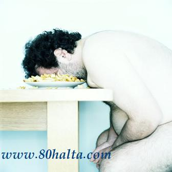

& ﻣﯧﯖﻪ ﺋﯩﺸﻠﯩﺘﯩﺶ ﯞﺍﻗﺘﻰ ﯰﺯﺍﺭﻏﺎﻧﺪﺍ ، ﯰﺯﯗﻗﻠﯘﻕ ﺳﻪﺭﭘﯩﻴﺎﺗﻰ ﺋﯧﺸﯩﭗ ، ﻫﺎﺭﻏﯩﻨﻠﯩﻖ ﻫﯩﺲ ﻗﯩﻠﯩﻤﯩﺰ . ﺑﻪﺯﯨﻠﻪﺭ ﺑﯘﻧﺪﺍﻕ ﯞﺍﻗﯩﺘﺘﺎ ﺑﺎﺷﻨﻰ ﺳﻮﻏﻮﻕ ﺳﯘﻏﺎ ﭼﯩﻠﯩﺴﺎ ﻛﺎﻟﻼ ﺳﻪﮔﯩﭗ ، ﯴﮔﯩﻨﯩﺶ ﯞﻩ ﺧﯩﺰﻣﻪﺕ ﯴﻧﯩﻤﯩﻨﻰ ﯪﺷﯘﺭﻏﯩﻠﻰ ﺑﻮﻟﯩﺪﯗ ﺩﻩﭖ ﻗﺎﺭﺍﻳﺪﯗ .
ﯬﻣﯩﻠﻴﻪﺗﺘﻪ ﺑﺎﺷﻨﻰ ﺳﻮﻏﻮﻕ ﺳﯘﻏﺎ ﭼﯩﻠﯩﻐﺎﻧﺪﺍ ، ﻗﺎﻥ ﺗﯘﻣﯘﺭﻻﺭ ﺟﯩﺪﺩﯨﻲ ﺗﺎﺭﯨﻴﯩﭗ ،ﻗﺎﻥ ﯪﻳﻠﯩﻨﯩﺶ ﯪﺳﺘﯩﻼﻳﺪﯗ – ﺩﻩ ، ﭼﻮﯓ ﻣﯧﯖﯩﮕﻪ ﻳﻪﺗﻜﯜﺯﻟﯜﭖ ﺑﯧﺮﯨﻠﺪﯨﻐﺎﻥ ﯰﺯﯗﻗﻠﯘﻕ ﯞﻩ ﯮﻛﺴﯩﮕﯩﻨﻼﺭ ﯬﻛﺴﯩﭽﻪ ﺗﯧﺨﯩﻤﯘ ﯪﺯﻻﭖ ﻛﯧﺘﯩﺪﯗ ؛ ﯰﻧﯩﯔ ﯴﺳﺘﯩﮕﻪ ﻫﺎﺭﻏﯩﻨﻠﯩﻘﻨﻰ ﻏﯩﺪﯨﻘﻠﯩﻐﯘﭼﻰ ﻧﯧﺮﯞﯨﻼﺭ ﺩﺍﯞﺍﻣﻠﯩﻖ ﻗﻮﺯﻏﯩﻠﯩﭗ ﺗﯘﺭﻏﺎﭼﻘﺎ ، ﯪﺳﺎﻧﻼ ﻧﯧﺮﯞﺍ ﯪﺟﯩﺰﻟﯩﻖ ﻛﯧﺴﯩﻠﻰ ﭘﻪﻳﺪﺍ ﺑﻮﻟﯩﺪﯗ .
& ﯰﺧﻼﯞﺍﺗﻘﺎﻧﺪﺍ ﻳﯧﯖﻰ ﻫﯜﺟﻪﻳﺮﯨﻠﻪﺭ ﭘﻪﻳﺪﺍ ﺑﻮﻟﯩﺪﯗ ؛ ﺗﯧﺮﯨﺪﯨﻜﻰ ﻫﯜﺟﻪﻳﺮﯨﻠﻪﺭ 30 ﻛﯜﻡ ﯬﺗﺮﺍﭘﯩﺪﺍ ﺩﻩﯞﯨﺮﻟﯩﻚ ﻣﯧﺘﺎﺑﻮﻟﯩﺰﯨﻢ ﺋﯧﻠﯩﭗ ﺑﺎﺭﯨﺪﯗ . ﻳﯧﻤﻪﻛﻠﯩﻜﻠﻪﺭﺩﯨﻜﻰ ﯪﻗﺴﯩﻞ ﯲﺳﺘﯜﺭﮔﯜﭼﻰ ﻫﻮﺭﻣﯘﻥ ﯪﺭﻗﯩﻠﯩﻖ ﻳﯧﯖﻰ ﻫﯜﺟﻪﻳﺮﯨﻠﻪﺭﻧﻰ ﺑﯩﺮﯨﻜﺘﯜﺭﺩﯗ .ﯬﻣﯩﻠﻴﻪﺗﺘﻪ ﺑﯘ ﺧﯩﻞ ﯲﺳﺘﯜﺭﮔﯜﭼﻰ ﻫﻮﺭﻣﯘﻥ ﭘﻪﻗﻪﺗﻼ ﯰﺧﻼﯞﺍﺗﻘﺎﻧﺪﺍ ﯪﺟﯩﺮﻟﯩﭗ ﭼﯩﻘﯩﺮﯨﻠﺪﯗ .ﺷﯘﯕﺎ ، ﯰﻳﻘﯘ ﻳﯧﺘﻪﺭﻟﯩﻚ ﺑﻮﻟﻤﯩﺴﺎ ، ﺗﯧﺮﯨﮕﯩﻤﯘ ﻧﺎﭼﺎﺭ ﺗﻪﺳﯩﺮ ﻛﯚﺭﺳﯩﺘﯩﺪﯗ .
ﺗﯧﺮﻩ ﻣﯧﺘﺎﺑﻮﻟﯩﺰﯨﻤﻨﻰ ﻛﯧﭽﯩﺪﻩ ﺟﺎﻧﻠﯩﻨﯩﭗ ﻛﯧﺘﯩﺪﯗ ، ﻛﯜﻧﺪﯛﺯﻯ ﯰﺧﻠﯩﻐﺎﻧﺪﺍ ﮔﻪﺭﭼﻪ ﺑﯘ ﺧﯩﻞ ﯲﺳﺘﯜﺭﮔﯜﭼﻰ ﻫﻮﺭﻣﯘﻥ ﯪﺟﯩﺮﻟﯩﭗ ﭼﯩﻘﺴﯩﻤﯘ ،ﯬﻣﻤﺎ ﯰﻧﯩﯔ ﯴﻧﯩﻤﻰ ﻛﯧﭽﯩﺪﻩ ﯪﺟﯩﺮﻟﯩﭗ ﭼﯩﻘﻘﺎﻧﻐﺎ ﻳﻪﺗﻤﻪﻳﺪﯗ .ﻳﻪﻧﻰ ﻛﻪﭺ ﺳﺎﯬﺕ 10 ﺩﯨﻦ ﻛﯧﻴﯩﻦ ﯬﺗﯩﮕﻪﻥ ﺳﺎﯬﺕ 4 ﻛﯩﭽﻪ ﺑﻮﻟﻐﺎﻥ ﯞﺍﻗﯩﺖ ،ﺗﯧﺮﻩ ﻣﯧﺘﺎﺑﻮﻟﯩﺰﯨﻤﯩﻨﯩﯔ ﺗﺎﺯﺍ ﺟﺎﻟﻼﻧﻐﺎﻥ ﯞﺍﻗﺘﻰ ﺑﻮﻟﯩﺪﯗ .
& ﻧﯘﺭﻏﯘﻥ ﯪﻳﺎﻟﻼﺭ ﺳﯧﺰﯨﻜﻠﯩﻜﻨﯩﯔ ﺩﻩﺳﻠﻪﭘﻜﻰ ﻣﻪﺯﮔﯩﻠﺪﻩ ﻫﻪﺭ ﺧﯩﻞ ﺗﻪﺳﯩﺮﻟﻪﺭﮔﻪ ﯰﭼﯩﺮﺍﻳﺪﯗ ،ﺑﻮﻟﯘﭘﻤﯘ ﻗﯘﺳﯘﺵ ﯬﻫﯟﺍﻟﻰ ﻧﯩﺴﭙﻪﺗﻪﻥ ﺋﯧﻐﯩﺮ ﺑﻮﻟﯩﺪﯗ .
ﯪﺩﻩﺗﺘﻪ ﻫﺎﻣﯩﻠﺪﺍﺭ ﯪﻳﺎﻟﻼﺭﻏﺎ ﺩﻭﺧﺘﯘﺭﻻﺭ ﯞﯨﺘﺎﻣﯩﻦ "6 ﺏ" ﻧﻰ ﺋﯩﭽﯩﺮﯛﺵ ﯪﺭﻗﯩﻠﯩﻖ ﯰﻻﺭﻧﯩﯔ ﻗﯘﺳﯘﺷﯩﻨﻰ ﺗﻮﺧﺘﯩﺘﯩﺪﯗ .ﯬﻣﻤﺎ ،ﺗﻪﺟﯩﺮﺑﯩﻠﻪﺭﺩﯨﻦ ﻗﺎﺭﯨﻐﺎﻧﺪﺍ ، ﯞﯨﺘﺎﻣﯩﻦ "6 ﺏ" ﯪﻧﯩﻨﯩﯔ ﻧﯧﺮﯞﯨﺴﯩﻐﺎ ﺯﯨﻴﺎﻧﻠﯩﻖ ﺑﻮﻟﯘﭘﻼ ﻗﺎﻟﻤﺎﻱ ﺑﻪﻟﻜﻰ ﻳﻪﻧﻪ ﺗﯚﺭﻩﻟﻤﯩﻨﯩﯔ ﻏﻪﻳﺮﻯ ﻳﯧﺘﯩﻠﯩﭗ ﻗﯧﻠﯩﺸﯩﻨﻰ ﻛﻪﻟﺘﯜﺭﯛﭖ ﭼﯩﻘﯩﺮﺩﯗ . ﯞﯨﺘﺎﻣﯩﻦ "6 ﺏ" ﻧﻰ ﺋﯩﺸﻠﻪﺗﻤﻪﻱ ، ﻫﻪﺳﻪﻝ ﺋﯩﺴﺘﯩﻤﺎﻝ ﻗﯩﻠﯩﺶ ﯪﺭﻗﯩﻠﯩﻘﻤﯘ ﻫﺎﻣﯩﻠﺪﺍﺭﻟﯩﻘﺘﯩﻜﻰ ﻗﯘﺳﯘﺷﻨﻰ ﺗﻮﺧﺘﺎﺗﻘﯩﻠﻰ ﺑﻮﻟﯩﺪﯗ. (بىھى شەربىتى ياكى مۇرابباسىنىڭ سىزىكنى پەسەيتىش، كۆڭۈل ئىلىشىپ، ئىشتاھا تۇتۇلۇشقا بولغان ئۈنۈمى ئالاھىدە يۇقۇرى-80خالتا بلوگ ئىزاھاتى)
& ﺧﻪﺗﺘﺎﺗﻠﯩﻖ ﯲﻣﯜﺭﻧﻰ ﯰﺯﺍﺭﺗﯩﺪﯗ . ﺑﯧﻠﯩﻖ ﺗﯘﺗﯘﺵ ﻗﺎﻥ ﺑﯧﺴﯩﻤﻨﻰ ﻧﻮﺭﻣﺎﻟﻼﺷﺘﯘﺭﺩﯗ . ﻣﯘﺯﯨﻜﺎ ﯪﯕﻼﺵ ﺋﯩﺸﺘﺎﻫﺎﻧﻰ ﯪﭼﯩﺪﯗ . ﮔﯜﻝ ﯲﺳﺘﯜﺭﯛﺵ ﻣﯩﺠﻪﺯﻧﻰ ﭼﯧﻨﯩﻘﺘﯘﺭﺩﯗ . ﮔﯚﺷﺴﯩﺰ ﺗﺎﻣﺎﻕ ﻳﯧﻴﯩﺶ ﻛﯧﺴﻪﻟﻠﯩﻜﻠﻪﺭﻧﻰ ﯪﺯﺍﻳﺘﯩﺪﯗ . ﻳﯜﺯ ﺳﯜﺭﺗﯜﺵ ﺯﯗﻛﺎﻣﻨﯩﯔ ﯪﻟﺪﯨﻨﻰ ﯪﻟﯩﺪﯗ .% ﺭﻩﺳﯩﻢ ﺳﯩﺰﯨﺶ ﺗﻪﭘﻪﻛﻜﯘﺭﻧﻰ ﺑﯧﻴﯩﺘﯩﺪﯗ . ﺗﺎﻗﻘﺎ ﭼﯩﻘﯩﺶ ﭼﯩﺪﺍﻣﭽﺎﻧﻠﯩﻘﻨﻰ ﯪﺷﯘﺭﺩﯗ . ﯞﯦﻠﯩﺴﭙﯩﺖ ﻣﯩﻨﯩﺶ ﺑﻪﺩﻩﻧﻨﻰ ﮔﯜﺯﻩﻟﻠﻪﺷﺘﯜﺭﺩﯗ . ﻳﯧﺰﯨﻘﭽﯩﻠﯩﻖ ﻗﯩﻠﯩﺶ ﺗﻪﺳﻪﯞﯞﯗﺭﻧﻰ ﻛﯧﯖﻪﻳﺘﯩﺪﯗ .
& ﺑﻪﺯﯨﻠﻪﺭ ﻗﻮﻟﻨﯩﯔ ﺑﺎﺭﻣﯩﻐﯩﻨﻰ ﺑﯧﺴﯩﭗ ﻗﺎﺱ ﭼﯩﻘﯩﺮﯨﺸﻨﻰ ﻳﺎﺧﺸﻰ ﻛﯚﺭﯨﺪﯗ ﯞﻩ ﯰﻧﯩﯖﺪﯨﻦ ﻫﯘﺯﯗﺭﻟﯩﻨﺪﯗ . ﻣﯘﻧﺪﺍﻕ ﻗﯩﻠﯩﺸﻨﯩﯔ ﻗﻮﻝ ﺑﯘﻏﯘﻣﻠﯩﺮﯨﻨﻰ ﺟﺎﻟﻼﻧﺪﯗﺭﯗﺷﻘﺎ ﭘﺎﻳﺪﯨﺴﻰ ﺑﺎﺭ ،ﺩﻩﭖ ﻗﺎﺭﺍﻳﺪﯗ .ﯬﻣﯩﻠﻴﻪﺗﺘﻪ ، ﺑﯘﻧﺪﺍﻕ ﻗﯩﻠﯩﺸﻨﯩﯔ ﺯﯨﻴﯩﻨﻰ ﺑﺎﺭﻛﻰ ،ﭘﺎﻳﺪﯨﺴﻰ ﻳﻮﻕ . ﺑﯘﻏﯘﻣﻼﺭﻧﯩﯔ ﻗﺎﭘﭽﯘﻗﻠﯩﺮﻯ ﯞﻩ ﭘﻪﻳﻠﻪﺭ ﻣﻪﻟﯘﻡ ﺩﻩﺭﯨﺠﯩﺪﻩ ﺋﯧﻼﺳﺘﯩﻜﯩﻠﯩﻘﻘﺎ ﺋﯩﮕﻪ ، ﺑﺎﺭﻣﺎﻗﻼﺭﻧﻰ ﺑﺎﺳﻘﺎﻧﺪﺍ ، ﺑﯘﻏﯘﻣﻼﺭﺩﯨﻜﻰ ﻛﯜﻣﯜﺭﭼﻪﻛﻠﻪﺭ ﺳﯜﺭﻛﯩﻠﯩﺶ ﻫﺎﺳﯩﻞ ﻗﯩﻠﯩﺪﯗ ﻳﺎﻛﻰ ﻳﻪﯕﮕﯩﻞ ﺩﻩﺭﯨﺠﯩﺪﻩ ﺳﻮﻗﯘﺷﯩﺪﯗ . ﺑﯘﻧﺪﺍﻕ ﻫﺎﻟﻪﺕ ﯬﺗﯩﺮﭘﺘﯩﻜﻰ ﻧﯧﺮﯞﯨﻼﺭﻧﻰ ﻏﯩﺪﯨﻘﻼﻳﺪﯗ . ﯬﮔﻪﺭ ﺑﯘﻏﯘﻣﻼﺭﺩﺍ ﺑﯩﺮﻩﺭ ﻧﻮﻗﺴﺎﻥ ﺑﺎﺭ ﺑﻮﻟﺴﺎ ، ﺗﯧﺨﯩﻤﯘ ﭼﻮﯓ ﯪﯞﺍﺯ ﭼﯩﻘﯩﺪﯗ .ﺷﯘﯕﺎ ﺑﺎﺭﻣﺎﻗﻼﺭﻧﻰ ﺑﯧﺴﯩﯟﻩﺭﮔﻪﻧﺪﻩ ﭘﻪﻳﻠﻪﺭ ﻫﻪﺩﯨﺪﯨﻦ ﺯﯨﻴﺎﺩﻩ ﺑﻮﺷﺎﭖ ﻛﯧﺘﯩﭗ ﺑﺎﺭﻣﺎﻕ ﻧﺎﺑﯘﺕ ﺑﻮﻟﯩﺪﯗ .
& ﮔﯚﺷﺴﯩﺰ ﺗﺎﻣﺎﻗﺎﻻﺭﻧﻰ ﻳﯧﺘﯩﺸﻜﻪ ﯪﺩﻩﺗﻠﻪﻧﺴﯩﯖﯩﺰ ﯰﺯﺍﻕ ﯲﻣﯜﺭ ﻛﯚﺭﯨﺴﯩﺰ . ﯪﺩﻩﻡ ﻳﺎﺷﺎﻧﻐﺎﻥ ﯞﺍﻗﯩﺘﺘﺎ ، ﺗﯧﻨﯩﮕﻪ ﺑﯩﺮ – ﺋﯩﻜﻜﻰ ﺧﯩﻞ ﻛﯧﺴﻪﻟﻠﯩﻚ ﻫﻪﻣﺮﺍﻫ ﺑﻮﻟﯩﺪﯗ . ﻫﺎﻟﺒﯘﻛﻰ ﺑﯘﻧﺪﺍﻕ ﭼﺎﻏﺪﺍ ﮔﯚﺷﻠﯜﻙ ، ﻳﺎﻏﻠﯩﻖ ﺗﺎﻣﺎﻗﻼﺭ ﺑﻪﺩﻩﻧﻨﯩﯔ ﺷﯘ ﺧﯩﻞ ﻫﺎﻟﯩﺘﯩﮕﻪ ﻣﺎﺱ ﻛﻪﻟﻤﻪﻳﺪﯗ . ﯰﻧﯩﯔ ﯴﺳﺘﯩﮕﻪ ﻳﯜﺭﻩﻙ ﺗﺎﺟﯩﺴﯩﻤﺎﻥ ﯪﺭﺗﯩﺮﯨﻴﻪ ﻗﯧﺘﯩﺶ ﺧﺎﺭﻩﻛﺘﯩﺮﻟﯩﻚ ﻳﯜﺭﻩﻙ ﻛﯧﺴﯩﻠﻰ ﻗﺎﺗﺎﺭﻟﯩﻘﻼﺭﻧﻰ ﺋﯧﻐﯩﺮﻻﺷﺘﯘﺭﯞﯦﺘﯩﺪﯗ ، ﻗﻪﯞﺯﯨﻴﻪﺕ ﻗﯩﻠﯩﭗ ﻗﻮﻳﯩﺪﯗ . ﻗﻪﯞﺯﯨﻴﻪﺕ ﯰﺯﺍﻕ ﯲﻣﯜﺭ ﻛﯜﺭﯛﺷﻨﯩﯔ ﺩﯛﺷﻤﯩﻨﻰ .ﻛﯚﻛﺘﺎﺕ ، ﭘﯘﺭﭼﺎﻕ ﻗﺎﺗﺎﺭﻟﯩﻖ ﻣﯩﻨﯩﺮﺍﻝ ﻣﺎﺩﺩﺍ ﻗﺎﺗﺎﺭﻟﯩﻘﻼﺭﻧﻰ ﻳﻪﺗﻜﯜﺯﯛﭖ ﺑﯧﺮﯨﭙﻼ ﻗﺎﻟﻤﺎﺳﺘﯩﻦ ، ﺑﻪﻟﻜﻰ ﯮﺭﮔﺎﻧﯩﺰﯨﻤﻨﻰ ﻣﻮﻝ ﯞﯨﺘﺎﻣﯩﻦ ﺑﯩﻠﻪﻥ ﺗﻪﻣﯩﻦ ﺋﯧﺘﯩﺪﯗ . ﮔﯚﺷﺴﯩﺰ ﺗﺎﻣﺎﻗﻼﺭﻧﯩﯔ ﺗﻪﺭﻛﯩﯟﯨﺪﻩ ﺗﺎﻻ ﻣﺎﺩﺩﺍ ﻣﻮﻝ . ﺑﯘ ﺧﯩﻞ ﻣﺎﺩﺩﯨﻼﺭﻧﯩﯔ ﺗﻪﺭﻩﺕ ﻣﺎﯕﺪﯗﺭﯗﺵ ﺭﯗﻟﻰ ﻳﺎﺧﺸﻰ. ﻳﺎﺷﺎﻧﻐﺎﻧﻼﺭﻧﯩﯔ ﺗﺎﻣﯩﻘﻰ ﻛﻪﻡ ، ﻫﻪﺭﻛﯩﺘﻰ ﯪﺯ ﺑﻮﻟﯩﺪﯗ . ﺷﯘﯕﺎ ﻗﻮﺭﺳﺎﻕ ﻣﯘﺳﻜﯘﻟﻠﯩﺮﻯ ﻳﯩﮕﯩﻠﻪﭖ ﺩﺍﺋﯩﻢ ﻗﻪﯞﺯﯨﺘﻪﺕ ﺑﻮﻟﯩﺪﯗ .ﻛﯚﻛﺘﺎﺕ ﯞﻩ ﭘﯘﺭﭼﺎﻕ ﺗﯜﺭﺩﯨﻜﻰ ﻳﯩﻤﻪﻛﻠﯩﻜﻠﻪﺭﻧﻰ ﺋﯩﺴﺘﯩﻤﺎﻝ ﻗﯩﻠﯩﭗ ﺑﻪﺭﺳﻪ ﻗﻪﯞﺯﯨﻴﻪﺕ ﺑﻮﻟﯘﭖ ﻗﯧﻠﯩﺸﻨﯩﯔ ﯪﻟﺪﯨﻨﻰ ﯪﻟﻐﯩﻠﻰ ﺑﻮﻟﯩﺪﯗ . ﺑﯘ ﯰﺯﺍﻕ ﯲﻣﯜﺭ ﻛﯚﺭﯛﺷﻜﻪ ﭘﺎﻳﺪﯨﻠﯩﻖ .
& ﺗﺎﻣﺎﻛﯩﻨﯩﯔ ﺯﯨﻴﯩﻨﻰ ﺋﯩﻨﺘﺎﻳﯩﻦ ﻛﯚﭖ ، ﺑﯘﻧﻰ ﻫﻪﻣﻤﺎ ﯪﺩﻩﻡ ﺑﯩﻠﯩﺪﯗ . ﺩﯨﯫﺑﯩﺖ ﻛﯧﺴﯩﻠﯩﮕﻪ ﻧﯩﺴﭙﻪﺗﻪﻥ ﺑﯘ ﺯﯨﻴﺎﻥ ﺗﯧﺨﯩﻤﯘ ﺋﯧﻐﯩﺮ ﺑﻮﻟﯩﺪﯗ . ﻣﻪﺳﯩﻠﻪﻥ : ﺗﺎﻣﺎﻛﺎ ﺗﻪﺭﻛﯩﯟﯨﺪﯨﻜﻰ ﻧﯩﻜﻮﺗﯩﻦ ﺑﯚﺭﻩﻙ ﯴﺳﺘﻰ ﺑﯧﺰﯨﻨﻰ ﻏﯩﺪﯨﻘﻼﭖ ، ﻫﻮﺭﻣﯘﻧﻼﺭﻧﯩﯔ ﯪﺟﯩﺮﻟﯩﭗ ﭼﯩﻘﯩﺸﯩﻨﻰ ﺗﯩﺰﻟﯩﺘﯩﭗ ، ﻗﺎﻧﺪﯨﻜﻰ ﻗﻪﻧﯩﺘﻨﻰ ﺗﯧﺨﯩﻤﯘ ﯲﺭﻟﯩﺘﯩﯟﯦﺘﯩﺪﯗ . ﺗﺎﻣﺎﻛﺎ ﻳﻪﻧﻪ ﻗﺎﻥ ﺑﯧﺴﯩﻤﯩﻨﻰ ﯲﺭﻟﯩﺘﯩﺶ ، ﻳﯜﺭﻩﻙ ﺳﻮﻗﯘﺷﯩﻨﻰ ﺗﯩﺰﻟﯩﺘﯩﺶ ﻗﺎﺗﺎﺭﻟﯩﻖ ﺗﻪﺳﯩﺮﻟﻪﺭ ﺑﯩﻠﻪﻥ ﺑﯚﺭﻩﻙ ، ﻳﯜﺭﻩﻙ ، ﻣﯧﯖﻪ ﻗﺎﻥ ﺗﯘﻣﯘﺭ ﻛﯧﺴﻪﻟﻠﯩﮕﯩﻨﯩﯔ ﭘﻪﻳﺪﺍ ﺑﻮﻟﯘﺷﻨﻰ ﺋﯩﻠﮕﯩﺮﻯ ﺳﯜﺭﯨﺪﯗ . << ﺩﯨﯫﺑﯩﺘﻠﯩﻚ ﭘﯘﺕ ﻛﯧﺴﻪﻟﻠﯩﻜﻰ >> ﻧﯩﯔ ﭘﻪﻳﺪﺍ ﺑﻮﻟﯘﺷﯩﻨﻰ ﺗﯩﺰﻟﯩﺘﯩﺪﯗ . ﺷﯘﯕﺎ ﺩﯨﯫﺑﯩﺖ ﻛﯧﺴﻪﻟﻠﯩﻜﻰ ﺑﺎﺭ ﺑﯩﻤﺎﺭﻻﺭ ﺗﺎﻣﺎﻛﺎ ﭼﻪﻛﻤﻪﺳﻠﯩﮕﻰ ﻻﺯﯨﻢ .
& ﯰﺯﯗﻥ ﯮﻟﺘﯘﺭﯗﭖ ﺧﯩﺰﻣﻪﺕ ﻗﯩﻠﺪﯨﻐﺎﻥ ﻛﯩﺸﯩﻠﻪﺭﻧﯩﯔ ﻫﻪﺭﻛﯩﺘﻰ ﯪﺯ ﺑﻮﻟﻐﺎﻧﻠﯩﻘﺘﯩﻦ ، ﺑﻮﻟﺠﯘﯓ ﮔﯚﺵ ﺑﯩﻠﻪﻥ ﻗﺎﻧﻨﯩﯔ ﯪﻳﻠﯩﻨﯩﺶ ﻛﯜﭼﻰ ﺗﻪﺳﯩﺮﮔﻪ ﯰﭼراپلا ﻗﺎﻟﻤﺎﺳﺘﯩﻦ ﻣﯘﻫﯩﻤﻰ ﻳﯜﺭﻩﻙ ﺋﯩﻘﺘﯩﺪﺍﺭﯨﻐﯩﻤﯘ ﺗﻪﺳﯩﺮ ﻛﯚﺭﺳﯩﺘﯩﺪﯗ . ﻣﺎﻧﺎ ﺑﯘ ﺗﺎﺟﯩﺴﯩﻤﺎﻥ ﻳﯜﺭﻩﻙ ﻛﯧﺴﯩﻠﯩﮕﻪ ﮔﯩﺮﯨﭙﺘﺎﺭ ﺑﻮﻟﯘﺷﻨﯩﯔ ﯪﺳﺎﺳﻰ . ﯰﻧﯩﯖﺪﯨﻦ ﺑﺎﺷﻘﺎ ،ﻣﻪﺭﻛﯩﺰﻯ ﻧﯧﺮﯞﺍ ﺳﯧﺴﺘﯩﻤﯩﺴﯩﻨﯩﯔ ﻛﯩﺴﻼﺭﻭﺩ ﺑﯩﻠﻪﻥ ﺗﻪﻣﯩﻨﻠﯩﻨﯩﺸﻰ ﺗولۇﻕ ﻛﺎﭘﺎﻟﻪﺗﻜﻪ ﺋﯩﮕﻪ ﻗﯩﻠﯩﻨﻤﺎﻱ ﺑﺎﺵ ﻗﯧﻴﯩﺶ ، ﭼﺎﺭﭼﺎﺵ ، ﻣﯧﯖﻪ ﻫﻪﺭﻛﯩﺘﻰ ﺟﯩﺪﺩﯨﻴﻠﯩﺸﯩﺶ ، ﻗﺎﻥ ﺑﯧﺴﯩﻤﻰ ﯲﺭﻟﻪﭖ ﻛﯧﺘﯩﺶ ﯞﻩ ﻧﯧﺮﯞﺍ ﯪﺟﯩﺰﻟﯩﺸﯩﺶ ، ﮔﯩﻤﺮﻭﻱ ، ﭘﯘﺕ ﺋﯩشﺸﯩﺶ ، ﻗﻪﯞﺯﯨﻴﻪﺕ ﻗﺎﺗﺎﺭﻟﯩﻖ ﻛﯧﺴﻪﻟﻠﯩﻜﻠﻪﺭ ﻛﯧﻠﯩﭗ ﭼﯩﻘﯩﺪﯗ . ﯰﺯﯗﻥ ﯮﻟﺘﯘﺭﯗﺵ ﺗﯜﭘﻪﻳﻠﯩﺪﯨﻦ ﻳﯜﺭﻩﻙ ﯞﻩ ﯲﭘﻜﯩﻨﯩﯔ ﻫﻪﺭﻛﯩﺘﻰ ﻗﺎﻻﻳﻤﯩﻘﺎﻧﻠﯩﺸﯩﭗ ﯪﺳﺎﻧﻼ ﺷﺎﻣﺎﻝ ﺗﯧﮕﯩﭗ ﻧﻪﭘﻪﺱ ﻳﻮﻟﻰ ﻳﺎﻟﻠﯘﻏﻠﯩﻨﯩﺸﻨﯩﻤﯘ ﻛﻪﻟﺘﯜﺭﯛﭖ ﭼﯩﻘﯩﺮﺩﯗ . ﺷﯘﯕﺎ ﯰﺯﯗﻥ ﻣﯘﺩﺩﻩﺕ ﯮﻟﺘﯘﺭﯗﭖ ﺧﯩﺰﻣﻪﺕ ﻗﯩﻠﺪﯨﻐﺎﻧﻼﺭ ﻣﯘﯞﺍﭘﯩﻖ ﺗﻪﻧﺘﻪﺭﺑﯩﻴﻪ ﭘﺎﯪﻟﯩﻴﺘﯩﮕﻪ ﻗﺎﺗﻨﯩﺸﯩﭗ ﺑﻪﺩﻩﻥ ﭼﯧﻨﯩﻘﺘﯘﺭﯗﭖ ﺗﯘﺭﯗﺵ ﻻﺯﯨﻢ .
& ﻣﯘﺷﺘﯩﻨﻰ ﻛﯜﺗﯜﺭﯛﭖ ﯪﺩﻩﻡ ﯰﺭﯗﺵ ﺑﯩﺮﺧﯩﻞ ﯬﺧﻼﻗﺴﯩﺰﻟﯩﻖ ﺋﯩﺸﺘﯘﺭ . ﯬﻣﻤﺎ ﻳﯜﺭﻩﻙ ﻣﯘﺳﻜﯘﻝ ﺗﯩﻘﯩﻠﻤﯩﺴﯩﻐﺎ ﮔﯩﺮﯨﭙﺘﺎﺭ ﺑﻮﻟﻐﺎﻧﻼﺭﻧﯩﯔ ﻳﯜﺭﯨﻜﻰ ﺗﻮﺧﺘﺎﭖ ﺑﻮﻟﻐﺎﻧﺪﺍ ﻣﯘﺷﺘﯘﻡ ﺑﯩﻠﻪﻥ ﯰﺭﯗﺵ ﻛﯧﺴﻪﻟﻨﻰ ﻗﯘﺗﻘﯘﺯﯗﺵ ﯴﭼﯜﻧﺪﯗﺭ . ﺑﯘﻧﯩﯔ ﺳﻪﯞﻩﺑﻰ ﻧﯩﻤﻪ ؟ ﭼﯜﻧﻜﻰ ﻳﯜﺭﻩﻙ ﻣﯘﺷﻜﯘﻝ ﺗﯩﻘﯩﻠﻤﯩﺴﻰ ﻳﯜﺯ ﺑﯧﺮﯨﭗ 1 ~2 ﺳﺎﯬﺕ ﺋﯩﭽﯩﺪﻩ ﻳﯜﺭﻩﻙ ﻣﯘﺳﻜﯘﻟﯩﻐﺎ ﺋﯧﻐﯩﺮ ﺩﻩﺭﯨﺠﯩﺪﻩ ﻗﺎﻥ ﻳﯧﺘﯩﺸﻤﻪﺳﻠﯩﻚ ﺳﻪﯞﻩﺑﯩﺪﯨﻦ ﺋﯩﻠﯩﻜﺘﯩﺮ ﺋﯧﻘﯩﻤﻰ ﺗﯘﺭﺍﻗﺴﯩﺰ ﺑﻮﻟﯘﭖ ، ﻗﯧﺮﯨﻨﭽﯩﻨﯩﯔ ﺗﺎﻻﻟﯩﻖ ﺗﯩﺘﯩﺮﺷﯩﻨﻰ ﻛﻪﻟﺘﯜﺭﯛﭖ ﭼﯩﻘﯩﺮﺩﯗ . ﻫﺎﻳﺎﺗﻨﻰ ﻗﯘﺗﯘﻟﺪﯗﺭﯗﺵ ﯴﭼﯜﻥ ﯬﯓ ﻳﺎﺧﺸﻰ ﯪﻣﺎﻝ ﺗﻮﻙ ﺑﯩﻠﻪﻥ ﺗﺎﻻﻟﯩﻖ ﺗﯩﺘﯩﺮﻩﺷﻨﻰ ﻳﻮﻗﯩﺘﯩﺶ ﯬﻣﻤﺎ ﻛﯚﺭﮔﻪﻧﻼ ﻳﻪﺭﺩﻩ ﺑﯘ ﯪﭘﯩﺮﺍﺕ ﺑﻮﻟﻤﯩﻐﺎﭼﻘﺎ ، ﺟﯩﺪﺩﯨﻲ ﭘﻪﻳﯩﺘﺘﻪ ﻣﯘﺷﺘﯘﻡ ﺑﯩﻠﻪﻥ ﻛﯚﻛﺮﻩﻛﻜﻪ ﯰﺭﯗﺵ ﻳﺎﺧﺸﻰ ﯰﺳﯘﻝ ﻫﯧﺴﺎﭘﻠﯩﻨﺪﯗ .
& ﯲﺗﺘﻪ ﺗﺎﺵ ﺗﯜﺭﯛﭖ ﻗﺎﻟﻐﺎﻥ ﻛﯩﺸﯩﻠﻪﺭ ﻣﺎﻱ ﺗﻪﺭﻛﯩﯟﻯ ﻳﯘﻗﺮﻯ ﺑﻮﻟﻐﺎﻥ ﺗﺎﻣﺎﻗﻼﺭﻧﻰ ، ﺳﯧﻤﯩﺰ ﮔﯚﺵ ، ﻫﺎﻟﯟﺍ ، ﻗﯘﻳﻤﺎﻕ ، ﺧﻮﺷﺎﯓ ﻗﺎﺗﺎﺭﻟﯩﻖ ﻳﺎﻏﺪﺍ ﭘﯘﺷﯘﺭﯗﻟﻐﺎﻥ ﻳﯩﻤﻪﻛﻠﯩﻜﻠﻪﺭﻧﻰ ، ﯰﻧﯩﯖﺪﯨﻦ ﺑﺎﺷﻘﺎ ﺗﯘﺧﯘﻡ ﺳﯧﺮﯨﻘﻰ ، ﻫﺎﻳﯟﺍﻧﺎﺗﻼﺭﻧﯩﯔ ﺟﯩﮕﯩﺮﻯ ، ﺑﯧﻠﯩﻖ ﻗﺎﺗﺎﺭﻟﯩﻘﻼﺭﻧﯩﻤﯘ ﻳﯧﻤﻪﺳﻠﯩﮕﻰ ﻻﺯﯨﻢ . ﭼﯜﻧﻜﻰ ﺑﯘﻧﺪﺍﻕ ﻳﯩﻤﻪﻛﻠﯩﻜﻠﻪﺭﻧﻰ ﻳﯧﮕﻪﻧﺪﯨﻦ ﻛﯧﻴﯩﻦ ﯲﺕ ﻗﯩﺴﻘﯩﺮﺍﭖ ﯲﺕ ﻛﺎﻧﺎﻟﭽﯩﻠﯩﺮﯨﻨﻰ ﺗﻮﺳﯩﯟﺍﻟﯩﺪﯗ ، ﻧﻪﺗﯩﺠﯩﺪﻩ ﯲﺕ ﻳﯘﻏﯘﻧﺎﻳﺪﯗ ﻳﺎﻛﻰ ﺑﻪﺩﻩﻧﺪﻩ ﺳﯧﺮﯨﻘﻠﯩﻖ ﭘﻪﻳﺪﺍ ﻗﯩﻠﯩﺪﯗ .
& ﺗﯩﺮﯨﺸﭽﺎﻥ ﺑﻮﻟﯘﯓ ، ﯲﻣﺮﯨﯖﯩﺰ ﯰﺯﺍﻕ ﺑﻮﻟﯩﺪﯗ . ﺑﻪﺯﻯ ﻛﯩﺸﯩﻠﻪﺭ ﺑﺎﺷﻘﯩﻼﺭﻧﻰ ﻣﯧﯖﻪﯕﻨﻰ ﻛﯚﭖ ﺋﯩﺸﻠﻪﺗﺴﻪﯓ ﯪﺳﺎﻥ ﻗﯧﺮﯨﭗ ﻛﯧﺘﯩﺴﻪﻥ ، ﺩﻩﭖ ﭼﺎﻗﭽﺎﻕ ﻗﯩﻠﯩﺪﯗ . ﺑﯘﻧﺪﺍﻕ ﻗﺎﺭﺍﺷﻨﯩﯔ ﻫﯩﭽﻘﺎﻧﺪﺍﻕ ﺋﯩﻠﻤﯩﻲ ﯪﺳﺎﺳﻰ ﻳﻮﻕ . ﺗﻪﺗﻘﯩﻘﺎﺗﭽﯩﻼﺭﻧﯩﯔ ﺳﯩﺘﺎﺗﺴﯩﺘﻜﺎ ﻗﯩﻠﯩﺸﯩﭽﻪ ، ﯰﻻﺭﻧﯩﯔ ﻳﺎﯞﺭﻭﭘﺎ ﯞﻩ ﯪﻣﯧﺮﻛﯩﺪﯨﻦ ﭼﯩﻘﻘﺎﻥ 400 ﻧﻪﭘﻪﺭ ﯪﺗﺎﻗﻠﯩﻖ ﻛﯩﺸﯩﻠﻪﺭﻧﻰ ﯰﻻﺭﻧﯩﯔ ﺷﯘﻏﯘﻟﻠﯩﻨﯩﯟﺍﺗﻘﺎﻥ ﯮﺧﺸﯩﻤﺎﻳﺪﯨﻐﺎﻥ ﻛﻪﺳﯩﭙﻠﯩﺮﻯ ﺑﻮﻳﯩﭽﻪ ﺗﯜﺭﮔﻪ ﯪﻳﺮﯨﻐﺎﻥ .ﯰﻻﺭﻧﯩﯔ ﯪﺭﺳﯩﺪﺍ ﯬﯓ ﯰﺯﯗﻥ ﯲﻣﯜﺭ ﻛﯚﺭﮔﻪﻧﻠﻪﺭﻧﯩﯔ ﯮﺗﺘﯘﺭﭼﻪ ﻳﯧشى 79 ﻳﺎﺵ ﺑﻮﻟﻐﺎﻥ ، ﺑﯘﻻﺭ ﻣﯧﯖﻪ ﺋﯩﺸﻠﯩﺘﯩﺸﻰ ﻛﯚﭖ ﺑﻮﻟﻐﺎﻥ ، ﺑﯘﻻﺭ ﻣﯧﯖﻪ ﺋﯩﺸﻠﯩﺘﯩﺶ ﻛﯚﭖ ﺑﻮﻟﻐﺎﻥ ﻛﻪﺷﭙﯩﻴﺎﺗﭽﻰ ، ﻳﺎﺯﻏﯘﭼﻰ ﯞﻩ ﯪﻟﯩﻤﻼﺭ ﺋﯩﻜﻪﻥ .
& ﻛﯚﭘﯜﻧﭽﻪ ﻛﯩﺸﯩﻠﻪﺭ ﯬﺗﺘﯩﮕﻪﻧﺪﻩ ﯪﭺ ﻗﻮﺳﺎﻕ ﺳﯜﺕ ﺋﯩﭽﯩﺪﯗ . ﺑﯘ ﺋﯩﻠﻤﯩﻴﻠﯩﻚ ﯬﻣﻪﺱ ، ﭼﯜﻧﻜﻰ ﺳﯜﺗﻨﯩﯔ ﺗﻪﺭﻛﯩﯟﯨﺪﻩ ﻛﯚﭘﻠﯩﮕﻪﻥ ﯪﻗﺴﯩﻞ ، ﻣﺎﻱ ﺑﻮﻟﻐﺎﻥ ﺑﯩﻠﻪﻥ ﯰ ﺑﯩﺮ ﺋﯩﭽﯩﻤﻠﯩﻚ . ﯰﻧﯩﯔ ﻣﯘﺗﻠﻪﻕ ﻛﯚﭖ ﻗﯩﺴﻤﻰ ﺳﯘ . ﯬﺗﺘﯩﮕﻪﻧﺪﻩ ﯪﭺ ﻗﻮﺳﺎﻕ ﺳﯜﺕ ﺋﯩﭽﻜﻪﻧﺪﻩ ، ﺑﯩﺮﯨﻨﭽﯩﺪﯨﻦ ، ﯪﺷﻘﺎﺯﺍﻥ ﺳﯘﻳﯘﻗﻠﯩﻐﻰ ﺗﯧﺨﯩﻤﯘ ﺳﯘﻳﯘﻟﯘﭖ ﻛﯧﺘﯩﺪﯗ ، ﺑﯘ ﯰﺯﯗﻗﻠﯘﻗﻨﯩﯔ ﺳﯘﻣﯘﺭﻟﯩﺸﯩﮕﻪ ﭘﺎﻳﺪﯨﻠﯩﻖ ﯬﻣﻪﺱ .ﺋﯩﻜﻜﯩﻨﭽﯩﺪﯨﻦ ، ﺳﯜﺗﻨﯩﯔ ﯪﺷﻘﺎﺯﺍﻥ – ﯴﭼﻪﻳﺪﻩ ﺗﻮﺧﺘﺎﺵ ﯞﺍﻗﺘﻰ ﺑﻪﻙ ﻗﯩﺴﻘﺎ ﺑﻮﻟﻐﺎﻧﭽﻘﺎ ، ﯴﺯﯛﻗﻠﯘﻗﻨﯩﯔ ﻳﯧﺘﻪﺭﻟﯩﻚ ﺳﯜﻣﯜﺭﻟﯩﺸﯩﮕﻪ ﺗﯧﺨﯩﻤﯘ ﭘﺎﻳﺪﯨﻠﯩﻖ ﯬﻣﻪﺱ . ﺷﯘﻧﯩﯔ ﯴﭼﯜﻥ ﯬﺗﺘﯩﮕﻪﻧﺪﻩ ﺳﯘﺕ ﺋﯩﭽﻜﻪﻧﺪﻩ ﯪﻟﺪﯨﻦ ﺑﯩﺮ ﯪﺯ ﻧﺎﻥ ﻳﺎﻛﻰ ﻣﻮﻣﺎ ﻳﻪﯞﯨﺘﯩﺶ ﻛﯧﺮﻩﻙ .
& ﺗﯘﻳﯘﻗﺴﯩﺰ ﻫﻮﺷﯩﻨﻰ ﻳﻮﻗﺎﺗﻘﺎﻥ ﻛﯧﺴﻪﻟﻨﻰ ﻧﻪﻕ ﻣﺎﻳﺪﺍﻧﺪﺍ ﺟﯩﺪﺩﯨﻲ ﻗﯘﺗﻘﯘﺯﯗﺷﺘﺎ :1 – ﻛﯧﺴﻪﻟﻨﯩﯔ ﺑﯧﺸﯩﻨﻰ ﭘﻪﺱ ﻗﯩﻠﯩﭗ ﺗﯜﺯ ﻳﺎﺗﻘﯘﺯﯗﺵ ﻛﯧﺮﻩﻙ . 2 – ﺩﻩﺭﻫﺎﻝ ﻳﯜﺭﻩﻛﻨﻰ ﻛﯚﻛﺮﻩﻙ ﺳﯩﺮﺗﯩﺪﯨﻦ ﺑﯧﺴﯩﺶ ، ﭼﯧﻜﯩﭗ ﯰﺭﯗﺵ ﻛﯧﺮﻩﻙ . ﻳﯜﺭﻩﻛﻨﻰ ﻛﯚﻛﺮﻩﻙ ﺳﯩﺮﺗﯩﺪﯨﻦ ﺑﯧﺴﯩﺶ ﻣﻪﺷﻐﯘﻻﺗﻰ ﻫﻪﺭ ﻣﯧﻨﯘﺗﯩﻐﺎ ﺗﻪﺧﻤﯩﻨﻪﻥ 70 ~80 ﻗﯧﺘﯩﻢ ﺋﯧﻠﯩﭗ ﺑﯧﺮﯨﻠﺪﯗ ، ﻛﯚﻛﺮﻩﻛﻨﻰ ﺑﯧﺴﯩﺸﺘﯩﻦ ﺑﯘﺭﯗﻥ ﻛﯧﺴﻪﻟﻨﯩﯔ ﮔﻪﯞﺩﻩ ﻗﯩﺴﻤﯩﻐﺎ ﭼﻮﯓ ﺗﺎﺧﺘﺎﻱ ﻗﻮﻳﯘﺵ ﻛﯧﺮﻩﻙ .3 – ﻳﯜﺭﻩﻛﻨﯩﯔ ﻛﯚﻛﺮﻩﻙ ﺳﯩﺮﺗﯩﺪﯨﻦ ﺑﯧﺴﯩﺶ ﺑﯩﻠﻪﻥ ﺑﯩﺮﮔﻪ ﻳﻪﻧﻪ ﺑﯩﺮ ﯪﺩﻩﻡ ﻛﯧﺴﻪﻟﻨﯩﯔ ﯪﻏﺰﯨﻐﺎ ﯪﻏﺰﯨﻨﻰ ﯰﺩﯗﻝ ﻗﯩﻠﯩﭗ ﭘﯜﯞﻟﻪﭖ ﻧﻪﭘﻪﺱ ﯪﻟﺪﯗﺭﯗﺵ ﻛﯧﺮﻩﻙ .
&ﯪﻟﯩﻤﻼﺭﻧﯩﯔ ﺗﻪﺗﻘﯩﻖ ﻗﯩﻠﯩﺸﻰ ﯪﺭﻗﯩﻠﯩﻖ ، ﯪﺩﻩﻡ ﺑﻪﺩﯨﻨﻨﯩﯔ ﯲﻣﯩﺮﯨﮕﻪ ﺗﻪﺳﯩﺮ ﻛﯚﺭﺳﯩﺘﯩﺪﯨﻐﺎﻥ ﯪﺳﺎﺳﻠﯩﻖ ﯪﻣﯩﻞ ، ﻳﯜﺭﻩﻛﻨﯩﯔ ﺯﻩﺋﯩﭙﻠﯩﺸﯩﺸﻰ ﺋﯩﻜﻪﻧﻠﯩﮕﯩﻨﻰ ﺑﺎﻳﻘﯩﺪﻯ .ﯪﺩﻩﻣﻨﯩﯔ ﻳﯜﺭﯨﻜﻰ ﻣﯩﻨﯘﺗﯩﻐﺎ 72 ﻗﯧﺘﯩﻢ ﺳﻮﻗﯩﺪﯗ ؛ 70 ﻳﺎﺵ ﺑﻮﻳﯩﭽﻪ ﻫﯩﺴﺎﭘﻠﯩﻐﺎﻧﺪﺍ ، ﯪﺩﻩﻣﻨﯩﯔ ﻳﯜﺭﯨﻜﻰ ﯲﻣﯜﺭ ﺑﯘﻳﻰ 2 ﻣﯩﻠﻴﺎﺭﺩ 500 ﻣﯩﻠﻴﯘﻥ ﻗﯧﺘﯩﻢ ﺳﻮﻗﯩﺪﯗ ، ﯬﮔﻪﺭ ﺑﻪﺩﻩﻥ ﺗﯧﻤﭙﯘﺭﺍﺗﯘﺭﺳﯩﻨﻰ ﺗﯚﯞﻩﻧﻠﯩﺘﯩﭗ ، ﻳﯜﺭﻩﻛﻨﻰ ﻣﯩﻨﯩﯘﺗﯩﻐﺎ 60 ﻗﯧﺘﯩﻢ ﺳﻮﻗﯩﺪﯨﻐﺎﻥ ﻗﯩﻠﻐﯩﻠﻰ ﺑﻮﻟﺴﺎ ، ﻳﯜﺭﻩﻛﻨﯩﯔ ﯲﻣﯜﺭﯨﻨﻰ ﯰﺯﺍﺭﺗﻘﯩﻠﻰ ﺑﻮﻟﯩﺪﯗ . ﻫﺎﺯﯨﺮ ﺳﯜﻧﺌﻲ ﯴﺳﯜﻝ ﺑﯩﻠﻪﻥ ﯪﺩﻩﻡ ﺑﻪﺩﯨﻨﻨﯩﯔ ﺗﯧﻤﭙﯘﺭﺍﺗﯘﺭﺳﯩﻨﻰ ﺯﻭﺭ ﻫﻪﺟﯩﻤﺪﻩ ﺗﯚﯞﻩﻧﻠﯩﺘﯩﺶ ﺗﻪﺱ ،ﻟﯧﻜﯩﻦ ﻣﯧﯖﯩﻨﻰ ﻫﻪﺭ ﯞﺍﻗﯩﺖ ﺗﯩﻨﯩﭻ ﺳﺎﻗﻠﯩﻴﺎﻟﯩﺴﺎ ، ﺑﯩﯫﺭﺍﻡ ﺑﻮﻟﻤﯩﺴﺎ ، ﯪﭼﭽﯩﻘﻼﻧﻤﯩﺴﺎ ، ﺑﻪﺩﻩﻥ ﺗﯧﻤﭙﯘﺭﺍﺗﯘﺭﺳﯩﻨﻰ ﻧﯩﺴﭙﯩﻲ ﻫﺎﻟﺪﺍ ﺗﯚﯞﻩﻧﻠﻪﺗﻜﯩﻠﻰ ، ﻳﯜﺭﻩﻛﻨﯩﯔ ﺳﻮﻗﯘﺷﯩﻨﻰ ﺗﯘﺭﺍﻗﻼﺷﺘﯘﺭﻏﯩﻠﻰ ﺑﻮﻟﯩﺪﯗ .ﺑﯘ ﯰﺯﯗﻥ ﯲﻣﯜﺭ ﻛﯚﺭﯛﺷﻜﻪ ﺋﯩﻨﺘﺎﻳﯩﻦ ﭘﺎﻳﺪﯨﻠﯩﻖ .
& ﺋﯩﺸﺨﺎﻧﯩﺪﺍ ﻛﯚﭖ ﯮﻟﺘﯘﺭﺩﯨﻐﺎﻧﻼﺭ ،ﻛﯚﺭﯛﺵ ﻗﯘﯞﯨﺘﯩﻨﯩﯔ ﯪﺟﯩﺰﻟﯩﺸﯩﺸﻨﯩﯔ ﯪﻟﺪﯨﻨﻰ ﺋﯧﻠﯩﺸﺘﺎ ﯞﯨﺘﺎﻣﯩﻦ " ﯪ" ﻧﯩﯔ ﯴﻧﯩﻤﻰ ﺋﯩﻨﺘﺎﻳﯩﻦ ﻳﺎﺧﺸﻰ. ﻛﯜﺩﻩ ﺑﯩﻠﻪﻥ ﺟﯩﮕﻪﺭﻧﻰ ﻗﻮﺭﯗﭖ ﻳﯩﺴﻪ ﯞﯨﺘﺎﻣﯩﻦ "ﯪ " ﻧﻰ ﺗﯘﻟﻠﯘﻗﻠﯩﻐﯩﻠﻰ ﺑﻮﻟﯩﺪﯗ . ﯰﻧﯩﯖﺪﯨﻦ ﺑﺎﺷﻘﺎ ، ﺗﻪﺭﻛﯩﯟﯨﺪﻩ ﯞﯨﺘﺎﻣﯩﻦ " ﺩ " ﻣﻮﻝ ﺑﻮﻟﻐﺎﻥ ﻳﯩﻤﻪﻛﻠﯩﻜﻠﻪﺭﻧﻰ ، ﻳﻪﻧﻰ ﺑﯧﻠﯩﻖ ، ﺗﻮﺧﯘ ﺟﯩﮕﯩﺮﻯ ، ﻗﺎﺗﺎﺭﻟﯩﻘﻼﺭﻧﻰ ﻳﻪﭖ ﺑﯧﺮﯨﺶ ﻻﺯﯨﻢ .
& ﺭﻩﺳﻤﯩﻲ ﺳﯩﺘﺎﺳﯩﺘﻜﯩﺪﺍ ﺑﺎﻳﻘﯩﻠﯩﺸﭽﻪ ، ﻣﯘﯞﻩﭘﭙﻪﻗﯩﻴﻪﺕ ﻗﺎﺯﺍﻧﻐﯘﭼﯩﻼﺭﻧﯩﯔ ﺯﻭﺭ ﻛﯚﭘﭽﯩﻠﯩﮕﻰ ﯬﺗﯩﮕﻪﻧﻠﯩﻚ ﻧﺎﺷﺘﺎ قىلىشنى ﯪﺩﻩﺕ ﻗﯩﻠﻐﺎﻥ ؛ ﻧﺎﺷﺘﺎ ﻗﯩﻠﻤﺎﻳﺪﯨﻐﺎﻧﻼﺭ ﯪﺳﺎﺳﻪﻥ ﯲﻣﯜﺭ ﺑﻮﻳﻰ ﻧﺎﻡ ﭼﯩﻘﯩﺮﺍﻟﻤﯩﻐﺎﻥ ، ﻧﺎﺷﺘﺎ ﻗﯩﻠﻤﯩﻐﺎﻥ ﻛﯩﺸﯩﻠﻪﺭﻧﯩﯔ ﻗﯧﻨﯩﺪﯨﻜﻰ ﻳﺎﻍ ﺗﻪﺭﻛﯩﯟﻯ ﺗﯚﯞﻩﻧﻠﻪﭖ ﻛﯧﺘﯩﭗ ، ﭼﯜﺷﺘﯩﻦ ﺑﯘﺭﯗﻥ ﺩﯨﻘﻘﯩﺘﯩﻨﻰ ﻣﻪﺭﻛﻪﺯﻟﻪﺷﺘﯜﺭﻩﻟﻤﻪﻳﺪﯗ ؛ ﻣﯘﮔﯩﺪﻩﭖ ﻳﯜﺭﯛﭖ ﺧﯩﺰﻣﻪﺕ ﯴﻧﯩﻤﻰ ﺗﯚﯞﻩﻧﻠﻪﭖ ﻛﯧﺘﯩﺪﯗ . ﺷﯘﯕﺎ ﻧﺎﺷﺘﺎ ﻗﯩﻠﻐﯩﻠﻰ ﯞﺍﻗﺘﻰ ﻳﻪﺗﻤﯩﮕﻪﻧﻠﻪﺭ ، ﻫﯩﭽﺒﻮﻟﻤﯩﻐﺎﻧﺪﺍ ﺑﯩﺮ ﺋﯩﺴﺘﺎﻛﺎﻥ ﻛﺎﻻ ﺳﯜﺗﻰ ﺋﯩﭽﯩﭗ ﺑﯩﺮﯨﻜﻤﻪ ﯞﯨﺘﺎﻣﯩﻦ ﻳﯩﻴﯩﺶ ﻻﺯﯨﻢ .